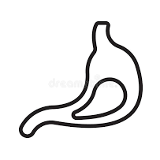
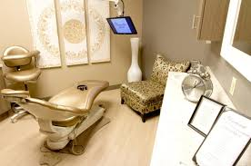
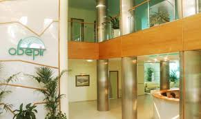
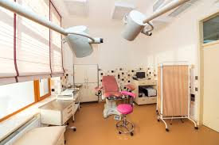
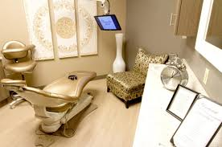
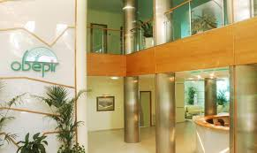
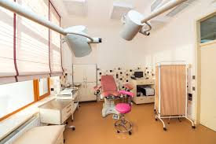

Графік роботи: пн.-сб. 8:00-20:00
нед.-вихідний
050 55 111 35
067 55 111 35
Львів
вул.Здоров'я, 45
УКР-РУС-ENG
Гінекологія
Стоматологія
Дерматологія
Дієтологія
«Клініка Альфа» - медичний багатопрофільний центр для надання широкого спектру послуг на всіх етапах процесу лікування – від діагностики і лікуавння до реабілітації.
Інноваційність – основа успішного лікування. Високе технічне оснащення медичного центра сучасним обладнанням дозволяє вирішувати складні клінічні випадки в мінімальий термін з максимальним комфортом і помірними фінансовими витратами.
Профілактика і активне виявлення хвороби. Завдяки налагодженій тісній співпраці між лікарем та паціентом, використанню нового обладнання, запровадженню комплексних програм, успішно вирішується задача первинних служб охорони здоров'я – швидка діагностика і призначення курсу лікування.
Орієнтованість на паціента. Максимум комфорту паціента при збереженні ефективності лекування забезпечує продуманий графік прийому, відсутність черг, досвідчений персонал, сучасні технології.
 





Інтер'єр клініки спрямований на те, щоб перебування паціетна у клініці пройшло у спокійній атмосфері, "як у дома".


Графік роботи: пн.-сб. 8:00-20:00
нед.-вихідний
050 55 111 35
067 55 111 35
Львів
вул.Здоров'я, 45